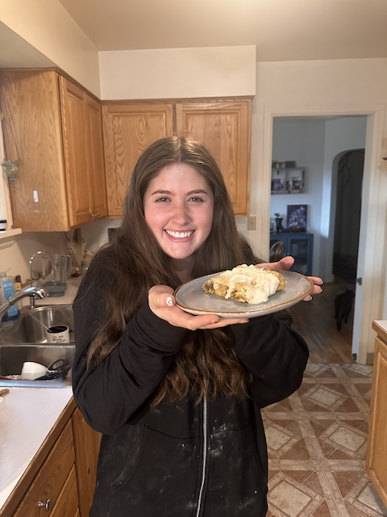

Hi! My name is Madison Van Horn. I have always loved baking but have really got to test my skills the last few years. I believe that baking is important in all of our lives. Whether it is sharing with others or baking for yourself, baking is one of the biggest comforts that I believe humans can have. I own 2 cats, Mika and Malikai. They are my favorite beings in the world. We even do some special cooking for them too! I live at homr with my partner of 8 years and we could not be happier to have settled in Missoula.
I began baking once I moved out from Pennsylvania across the country to Montana. I was lucky enough to have my great friends here, but I was by myself for many months. Once the holidays started rolling around I felt the typical holiday blues. This time around, I had no family. It is extremely expensive to fly to and from Montana, so it is rare I get to be with family for all of the holidays. I really fell in love with cooking when I moved out. My dad has been a cheg and owned a restaurant since I was born. It wasn't until thanksgiving rolled around that I realized the love I had for baking. Baking felt so intimate compared to cooking. I made my very first apple strudel! I was expecting it to be horrible, but it became my all time favorite dessert. I make it more than anything else. Nastolgia typically comes from childhood, but this dessert is nastolgic to me because of how special it became. I am so happy to share this recipe with everyone.